Візуалізація даних за допомогою ggplot2
Last updated on 2026-01-17 | Edit this page
Estimated time: 115 minutes
- Цей епізод є загальним оглядом ggplot2 і зосереджується на: (1) ознайомленні з системою шарів у ggplot2, (2) використанні аргументу group у функції aes(), (3) базовому налаштуванні графіків.
- Епізод залежить від даних, створених в епізоді “Маніпулювання даними за допомогою tidyr”. Якщо ви не дійшли або не пройшли увесь епізод про tidyr, ви можете надати учасникам доступ до даних, завантаживши їх або швидко створивши за допомогою наведеного нижче коду tidyr. Ймовірно, ви захочете скопіювати код в Etherpad.
- Якщо ви пропустили епізод про tidyr, ви можете перейти до розділу експорт даних у тому епізоді.
Overview
Questions
- Які компоненти ggplot?
- Які основні відмінності між базовими графіками R, lattice та ggplot?
- Як створити діаграми розсіювання, коробкові та стовпчикові?
- Як змінити естетику (наприклад, колір, прозорість) графіка?
- Як створити кілька графіків одночасно?
Objectives
- Створити точкові, коробкові та стовпчикові діаграми за допомогою ggplot.
- Задати універсальні параметри графіка.
- Пояснити, що таке фасетування та застосувати його в ggplot.
- Змінити естетику наявного графіка ggplot (включно з підписами осей та кольором).
- Побудувати складні та персоналізовані графіки на основі даних у датафреймі.
- Визначити відмінності між візуалізаціями базового R, lattice та ggplot.
Почнемо із завантаження необхідного пакета.
ggplot2 також входить до складу пакету
tidyverse.
R
library(tidyverse)
Якщо дані ще не знаходяться в робочій області, завантажте ті, які ми зберегли в попередньому уроці.
R
interviews_plotting <- read_csv("data_output/interviews_plotting.csv")
OUTPUT
Rows: 131 Columns: 45
── Column specification ────────────────────────────────────────────────────────
Delimiter: ","
chr (5): village, respondent_wall_type, memb_assoc, affect_conflicts, inst...
dbl (8): key_ID, no_membrs, years_liv, rooms, liv_count, no_meals, number_...
lgl (31): bicycle, television, solar_panel, table, cow_cart, radio, cow_plo...
dttm (1): interview_date
ℹ Use `spec()` to retrieve the full column specification for this data.
ℹ Specify the column types or set `show_col_types = FALSE` to quiet this message.Якщо ви не змогли завершити попередній урок або не зберегли дані, ви
можете створити їх зараз. Або завантажте за допомогою
read_csv() (варіант 1), або створіть за допомогою
dplyr та tidyr (варіант 2).
Параметри візуалізації в R
Перед тим як почати з ggplot2, корисно
знати, що в R існує кілька способів створювати візуалізації. Хоча
ggplot2 чудово підходить для створення
складних та висококастомізованих графіків, існують простіші та швидші
альтернативи, з якими ви можете зіткнутися або використовувати залежно
від контексту. Давайте коротко розглянемо декілька з них:
Базові графіки R
Базові графіки R є найпростішою формою візуалізації й чудово
підходять для швидкого, дослідницького аналізу. Можна створювати графіки
за допомогою невеликої кількості коду, але їхнє налаштування може бути
громіздким у порівнянні з ggplot2.
Приклад простого точкового графіка у базовому R з використанням
змінних no_membrs та liv_count:
R
plot(interviews_plotting$no_membrs, interviews_plotting$liv_count,
main = "Base R Scatterplot",
xlab = "Number of Household Members",
ylab = "Number of Livestock Owned")
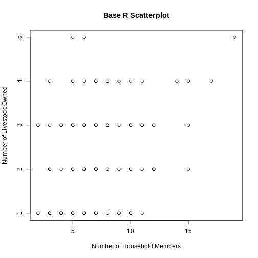
Lattice
Lattice — це ще одна система побудови графіків в R, яка дозволяє легко створювати багато панельні графіки у вигляді решітки. Воно відрізняється від ggplot2 тим, що весь графік визначається одним викликом функції та можливості для змін після побудови графіка обмежені.
Приклад графіка lattice з використанням змінних
no_membrs та liv_count, розбитих за
village:
R
library(lattice)
R
xyplot(liv_count ~ no_membrs | village, data = interviews_plotting,
main = "Lattice Plot: Livestock Count by Household Members",
xlab = "Number of Household Members",
ylab = "Number of Livestock Owned")
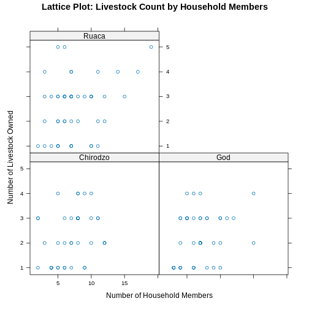
Побудова графіків за допомогою
ggplot2
ggplot2 — це пакет для побудови
графіків у R, який дозволяє легко створювати складні візуалізації з
даних датафрейму. Він забезпечує програмний інтерфейс, який дозволяє
задавати, які змінні зображати, як їх показувати та загальні візуальні
властивості. Тому нам потрібно внести лише мінімальні зміни, якщо
вихідні дані зміняться або якщо ми вирішимо перейти, наприклад, від
стовпчикової діаграми до точкової (діаграма розсіювання). Це допомагає
створювати графіки публікаційної якості з мінімальною кількістю
коригувань і налаштувань.
Функції ggplot2 найкраще працюють із
даними у ‘long’ форматі, тобто коли кожен вимір представлений окремим
стовпцем, а кожне спостереження — окремим рядком. Добре структуровані
дані заощадять вам багато часу під час побудови графіків у
ggplot2
ggplot графіки будуються крок за кроком шляхом додавання нових елементів. Такий спосіб додавання шарів забезпечує велику гнучкість і дозволяє налаштовувати побудовані графіки.
Кожен графік, побудований за допомогою ggplot2, повинен включати такі елементи
Дані
-
Естетичне відображення (aes)
- Описує як змінні накладаються на графічні атрибути
- До таких атрибутів належать осі x і y, колір, заливка, форма точок, прозорість (alpha)
-
Геометричні об’єкти (geom)
- Визначає, як дані будуть зображені графічно — у вигляді стовпчиків
(
geom_bar), діаграми розсіювання (geom_point), лінії (geom_line) тощо.
- Визначає, як дані будуть зображені графічно — у вигляді стовпчиків
(
Таким чином, шаблон побудови графіка в ggplot2:
<DATA> %>%
ggplot(aes(<MAPPINGS>)) +
<GEOM_FUNCTION>()Нагадаємо з попереднього уроку, що оператор %>%
(pipe) передає результат попереднього кроку як вхідні дані для наступної
функції. ggplot — це функція, яка очікує
датафрейм як перший аргумент. Це дозволяє не вказувати аргумент
data = всередині функції ggplot, а просто
передавати дані через pipe (%>%).
- використайте функцію
ggplot()та прив’яжіть графік до певного датафрейму.
R
interviews_plotting %>%
ggplot()
- визначити відображення (mapping) за допомогою функції
aes(), обравши змінні для побудови графіка та вказавши, як їх показувати на графіку, наприклад, через позиції по осях x/y або через характеристики, такі як розмір, форма, колір тощо.
R
interviews_plotting %>%
ggplot(aes(x = no_membrs, y = number_items))
-
додати ‘geoms’ — графічні представлення даних на графіку (точки, лінії, стовпчики).
ggplot2пропонує багато різних geoms; сьогодні ми використаємо деякі з поширених, зокрема:-
geom_point()для діаграм розсіювання, точкових графіків тощо. -
geom_boxplot()для коробкових діаграм (boxplots)! -
geom_line()для ліній тренду, часових рядів тощо.
-
Щоб додати geom до графіка, використовуйте оператор +.
Оскільки у нас дві безперервні змінні, спочатку використаємо
geom_point():
R
interviews_plotting %>%
ggplot(aes(x = no_membrs, y = number_items)) +
geom_point()
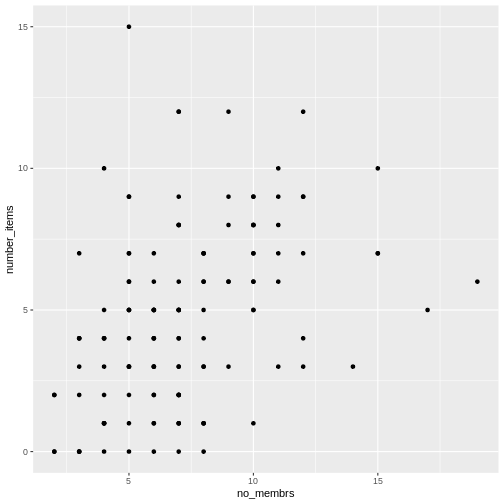
Символ + у пакеті ggplot2
особливо корисний, тому що він дозволяє змінювати вже створені об’єкти
ggplot. Це означає, що ви можете легко налаштовувати шаблони графіків і
зручно досліджувати різні типи візуалізацій, тому наведений вище графік
також можна створити за допомогою такого коду, подібного до підходу
“проміжних кроків” у попередньому уроці:
R
# Присвоїти графік змінній
interviews_plot <- interviews_plotting %>%
ggplot(aes(x = no_membrs, y = number_items))
# Побудувати точковий графік
interviews_plot +
geom_point()
Примітки
- Усе, що ви вказуєте у функції
ggplot(), буде доступним для будь-яких шарів geom, які ви додаєте (тобто це універсальні налаштування графіка). Це включає відображення осей x та y, яке ви задали вaes(). - Ви також можете задавати відображення (mappings) окремо для
конкретного geom, незалежно від того, що визначено глобально у функції
ggplot(). - Знак
+, який використовується для додавання нових шарів, має бути розміщений наприкінці рядка, що містить попередній шар. Якщо ж знак+поставити на початку рядка, де додається новий шар, тоggplot2не додасть цей новий шар і поверне повідомлення про помилку.
R
## Це правильний синтаксис для додавання шарів
interviews_plot +
geom_point()
## Це не додасть новий шар і поверне повідомлення про помилку
interviews_plot
+ geom_point()
Побудова графіків крок за кроком
Побудова графіків у ggplot2 зазвичай
відбувається ітеративно. Спочатку ми визначаємо набір даних, який будемо
використовувати, розмічаємо осі та обираємо geom:
R
interviews_plotting %>%
ggplot(aes(x = no_membrs, y = number_items)) +
geom_point()

Потім ми починаємо модифікувати цей графік, щоб витягти з нього
більше інформації. Наприклад, при перегляді графіка ми помічаємо, що
точки з’являються лише на перетині цілих чисел змінних
no_membrs та number_items. Також, за
приблизною оцінкою, здається, що на графіку значно менше точок, ніж
рядків у нашому датафреймі. Це повинно нас привести до думки, що може
бути кілька спостережень, накладених одне на одне (наприклад, три
спостереження, де no_membrs = 3 і number_items
= 1).
Існує два основні способи розв’язання проблеми накладення точок (overplotting):
- зміна прозорості точок
- злегка зсунути розташування точок
Спочатку розглянемо варіант 1 — зміну прозорості точок. Під
“прозорістю” ми маємо на увазі непрозорість точки, тобто вашу здатність
бачити крізь точку. Ми можемо керувати прозорістю точок за допомогою
аргументу alpha у geom_point. Значення
alpha варіюються від 0 до 1, причому менші значення роблять
колір більш прозорим (alpha = 1 — значення за
замовчуванням). Зокрема, alpha = 0.1 робить точку у десять разів
прозорішою, ніж звичайна точка. Інакше кажучи, десять точок, накладених
одна на одну, виглядатимуть як звичайна точка.
Тут ми змінюємо alpha на alpha, намагаючись зменшити
ефект накладення точок. Хоча проблему накладення точок повністю не
вирішено, додавання прозорості починає її зменшувати, оскільки точки, де
спостереження накладаються, виглядають темнішими (на відміну від
світло-сірих):
R
interviews_plotting %>%
ggplot(aes(x = no_membrs, y = number_items)) +
geom_point(alpha = 0.5)
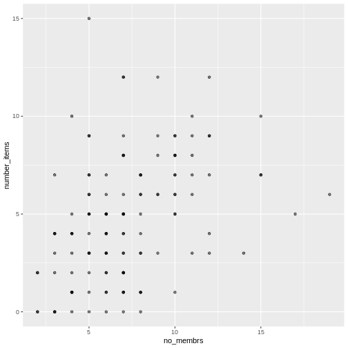
Це лише трохи допомогло з проблемою накладення точок, тому спробуємо другий варіант. Ми можемо злегка змістити точки на графіку, щоб бачити кожну точку навіть у місцях, де вони накладаються. Це зміщення додає трохи випадковості у розташування наших точок. Можна уявити цей процес як легке струшування графіка з накладеними точками. Точки трохи зсуватимуться вліво-вправо та вгору-вниз, але їхнє положення на графіку значно не зміниться. Зверніть увагу, що цей спосіб підходить для цілих чисел, а для чисел з десятковими знаками geom_jitter() не підходить, оскільки спотворює справжнє значення спостереження.
Ми можемо зсунути точки за допомогою функції
geom_jitter() замість geom_point(), як
показано нижче:
R
interviews_plotting %>%
ggplot(aes(x = no_membrs, y = number_items)) +
geom_jitter()
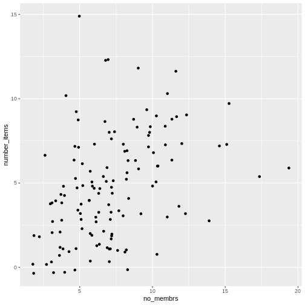
Функція geom_jitter() дозволяє задати величину
випадкового зсуву за допомогою аргументів width і
height. Якщо не вказувати значення для width і
height, geom_jitter() за замовчуванням
використовує 40% від роздільної здатності даних (найменша зміна, яку
можна виміряти). Тому, якщо ми хочемо менший зсув (jitter), ніж
за замовчуванням, слід обрати значення між 0.1 та 0.4. Експериментуйте
зі значеннями, щоб побачити, як змінюється ваш графік.
R
interviews_plotting %>%
ggplot(aes(x = no_membrs, y = number_items)) +
geom_jitter(alpha = 0.5,
width = 0.2,
height = 0.2)
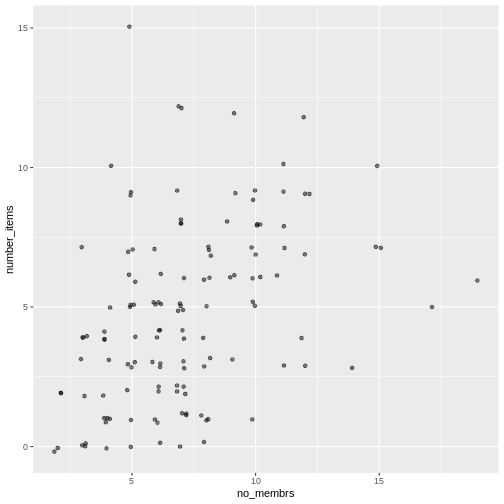
Для останньої зміни ми можемо також додати кольори всім точкам,
вказавши аргумент color всередині функції
geom_jitter():
R
interviews_plotting %>%
ggplot(aes(x = no_membrs, y = number_items)) +
geom_jitter(alpha = 0.5,
color = "blue",
width = 0.2,
height = 0.2)
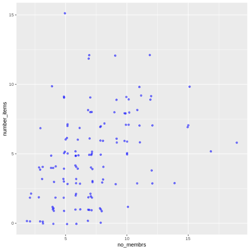
Щоб по-різному зафарбувати кожне село на графіку, можна передати в
аргумент color вектор. Однак, оскільки ми
тепер відображаємо ознаки даних через колір, замість того, щоб
встановлювати один колір для всіх точок, колір точок слід вказувати
всередині функції aes. Коли ми
відображаємо змінну через колір точок,
ggplot2 автоматично надає різні кольори
для різних значень цієї змінної. Ми продовжимо задання значень
alpha, width
та height поза функцією
aes, оскільки використовуємо одне й те
саме значення для всіх точок. ggplot2 розуміє як британське, так і
американське написання слова колір, тобто можна використовувати або
color, або colour. Ось приклад, де ми фарбуємо
точки залежно від village (села)
спостереження:
R
interviews_plotting %>%
ggplot(aes(x = no_membrs, y = number_items)) +
geom_jitter(aes(color = village), alpha = 0.5, width = 0.2, height = 0.2)
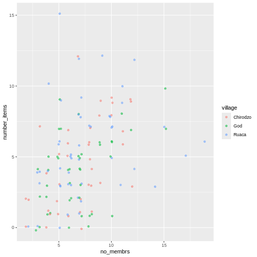
Схоже, що існує позитивна залежність між кількістю членів домогосподарства та кількістю придбаних предметів (з наведеного списку). Крім того, ця залежність, здається, не відрізняється між селами.
Примітки
Як ви дізнаєтеся, існує кілька способів зобразити залежність між
змінними. Ще один спосіб побудови графіка з накладенням точок —
використовувати функцію geom_count. Функція
geom_count() робить розмір кожної точки пропорційним
кількості елементів даних цього типу, а легенда показує, які розміри
точок відповідають певній кількості елементів.
R
interviews_plotting %>%
ggplot(aes(x = no_membrs, y = number_items, color = village)) +
geom_count()
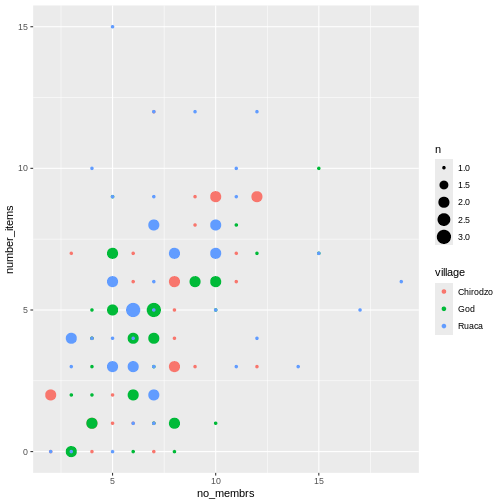
Завдання
Використайте щойно вивчене, щоб створити діаграму розсіювання
(scatter plot) для rooms за village, де
respondent_wall_type буде зображатися різними кольорами. Чи
здається вам, що це гарний спосіб показати залежність між цими змінними?
Які ще типи графіків можна використати для зображення такого типу
даних?
R
interviews_plotting %>%
ggplot(aes(x = village, y = rooms)) +
geom_jitter(aes(color = respondent_wall_type),
alpha = 0.5,
width = 0.2,
height = 0.2)
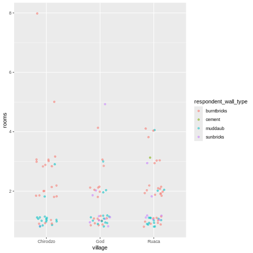
Це не дуже зручний спосіб показати такі дані, оскільки важко розрізнити села. Які ще типи графіків могли б краще допомогти вам візуалізувати цю залежність?
Коробковий графік (boxplot)
Ми можемо використовувати коробкові графіки (boxplots), щоб візуалізувати розподіл кімнат для кожного типу стін:
R
interviews_plotting %>%
ggplot(aes(x = respondent_wall_type, y = rooms)) +
geom_boxplot()
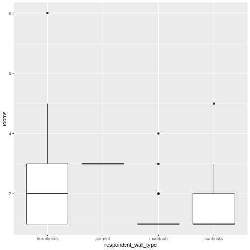
Додавши точки на boxplot, ми можемо краще уявити кількість вимірювань та їх розподіл:
R
interviews_plotting %>%
ggplot(aes(x = respondent_wall_type, y = rooms)) +
geom_boxplot(alpha = 0) +
geom_jitter(alpha = 0.5,
color = "tomato",
width = 0.2,
height = 0.2)
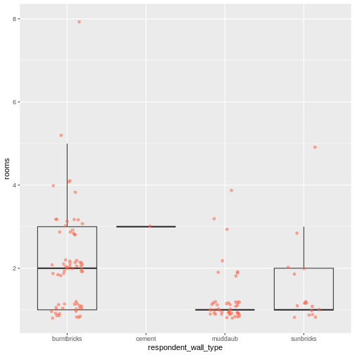
Ми бачимо, що будинки з глини (muddaub) та сонячної цегли (sunbrick) зазвичай менші за будинки з обпаленої цегли (burntbrick).
Зверніть увагу, як шар boxplot знаходиться позаду шару jitter? Що потрібно змінити в коді, щоб шар boxplot був попереду шару jitter?
Завдання
Boxplot корисні для підсумкової інформації, але вони приховують форму розподілу. Наприклад, якщо розподіл бімодальний, ми цього не побачимо у boxplot. Альтернатива boxplot — це violin plot (скрипковий графік), де зображається форма розподілу точок (щільність даних).
- Замініть коробковий графік (boxplot) на скрипковий (violin plot);
використайте
geom_violin().
R
interviews_plotting %>%
ggplot(aes(x = respondent_wall_type, y = rooms)) +
geom_violin(alpha = 0) +
geom_jitter(alpha = 0.5, color = "tomato")
WARNING
Warning: Groups with fewer than two datapoints have been dropped.
ℹ Set `drop = FALSE` to consider such groups for position adjustment purposes.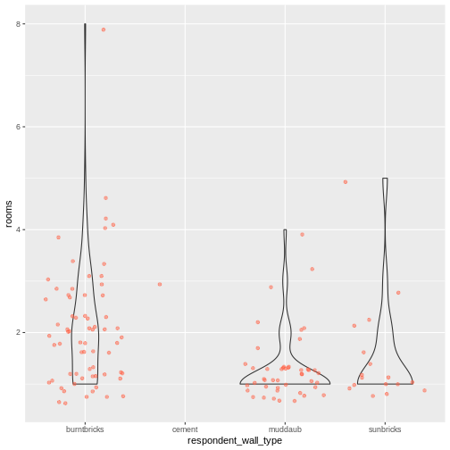
Завдання (continued)
До цього моменту ми розглядали розподіл кількості кімнат у залежності від типу стін. Спробуйте створити новий графік, щоб дослідити розподіл іншої змінної залежно від типу стін.
- Створіть boxplot для
liv_countдля кожного типу стін. Накладіть шар boxplot на шар jitter, щоб показати фактичні вимірювання.
R
interviews_plotting %>%
ggplot(aes(x = respondent_wall_type, y = liv_count)) +
geom_boxplot(alpha = 0) +
geom_jitter(alpha = 0.5, width = 0.2, height = 0.2)
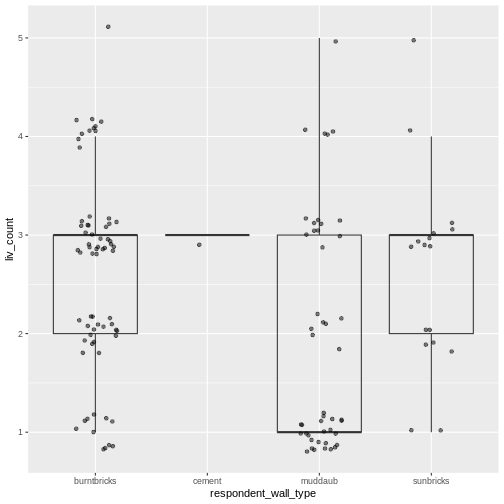
Завдання (continued)
- Додайте колір до точок на boxplot залежно від того, чи є респондент
членом іригаційної асоціації (
memb_assoc).
R
interviews_plotting %>%
ggplot(aes(x = respondent_wall_type, y = liv_count)) +
geom_boxplot(alpha = 0) +
geom_jitter(aes(color = memb_assoc), alpha = 0.5, width = 0.2, height = 0.2)
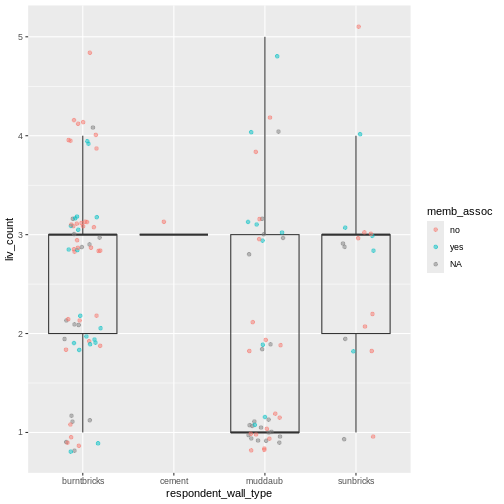
Стовпчасті діаграми (barplots)
Стовпчасті діаграми (barplots) також корисні для візуалізації
категоріальних даних. За замовчуванням geom_bar приймає
змінну для осі x і показує кількість випадків, з якими кожне значення x
(у цьому випадку — тип стін) зустрічається в наборі даних.
R
interviews_plotting %>%
ggplot(aes(x = respondent_wall_type)) +
geom_bar()

Ми можемо використати естетику fill у
geom_bar(), щоб зафарбувати стовпчики відповідно до частки
кожного підрахунку з кожного села.
R
interviews_plotting %>%
ggplot(aes(x = respondent_wall_type)) +
geom_bar(aes(fill = village))

Це створює стовпчасту діаграму. Як правило, їх складніше читати, ніж
стовпчики розташовані поруч. Ми можемо розділити частини складеної
стовпчастої діаграми, що відповідають кожному селу і розмістити їх
поруч, використавши аргумент position у geom_bar() та
встановивши його значення “dodge”.
R
interviews_plotting %>%
ggplot(aes(x = respondent_wall_type)) +
geom_bar(aes(fill = village), position = "dodge")
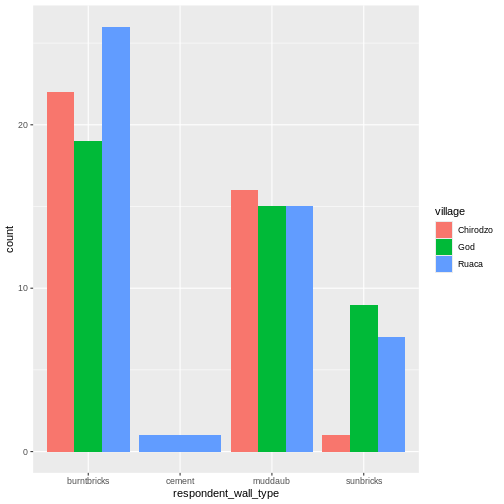
Це більш наочний графік, але нас, ймовірно, більше цікавить частка
кожного типу житла в кожному селі, ніж фактична кількість будинків
кожного типу (оскільки в різних селах могла бути опитана різна кількість
домогосподарств). Щоб порівняти частки, ми спочатку створимо новий
датафрейм (percent_wall_type) з новим стовпцем “percent”,
який представляє відсоток кожного типу будинку в кожному селі. Також ми
виключимо будинки з цементними стінами, оскільки в наборі даних був лише
один такий будинок.
R
percent_wall_type <- interviews_plotting %>%
filter(respondent_wall_type != "cement") %>%
count(village, respondent_wall_type) %>%
group_by(village) %>%
mutate(percent = (n / sum(n)) * 100) %>%
ungroup()
Тепер ми можемо використати цей новий датафрейм, щоб побудувати графік, який показує відсоток кожного типу будинку в кожному селі.
R
percent_wall_type %>%
ggplot(aes(x = village, y = percent, fill = respondent_wall_type)) +
geom_bar(stat = "identity", position = "dodge")
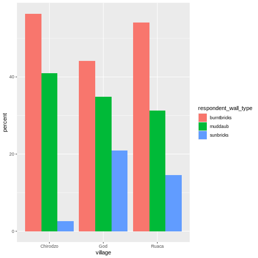
Завдання
Створіть стовпчасту діаграму, яка показує частку респондентів у
кожному селі, які є або не є членами іригаційної асоціації
(memb_assoc). У розрахунках і на графіку враховуйте лише
тих респондентів, які відповіли на це запитання. Яке село має найменшу
частку респондентів, що є членами іригаційної асоціації?
R
percent_memb_assoc <- interviews_plotting %>%
filter(!is.na(memb_assoc)) %>%
count(village, memb_assoc) %>%
group_by(village) %>%
mutate(percent = (n / sum(n)) * 100) %>%
ungroup()
percent_memb_assoc %>%
ggplot(aes(x = village, y = percent, fill = memb_assoc)) +
geom_bar(stat = "identity", position = "dodge")
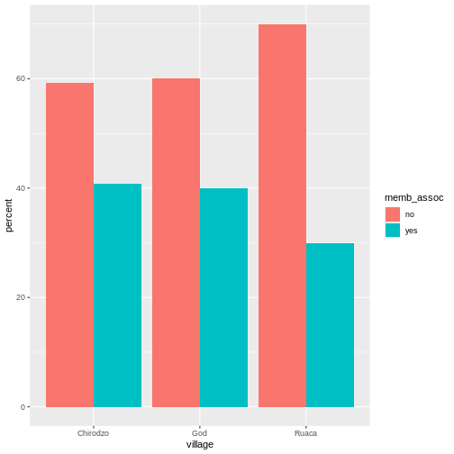
Село Ruaca мало найменшу частку респондентів, які є членами іригаційної асоціації.
Додавання підписів і заголовків
За замовчуванням підписи осей на графіку беруться з назв змінних, які
ми зображаємо. Проте, ggplot2 пропонує
багато можливостей для налаштування: можна задавати власні підписи осей,
додавати заголовок до графіка за допомогою відносно невеликої кількості
коду. Ми додамо більш інформативні підписи для осей x та y,
пояснювальний підпис для легенди та заголовок до графіка.
Функція labs приймає такі аргументи:
-
title– заголовок графіку -
subtitle– підзаголовок (текст меншим шрифтом під заголовком) -
caption– підпис до графіка -
...– будь-які пари імені та значення для естетики, які використовуються у графіку (наприклад,x,y,fill,color,size)
R
percent_wall_type %>%
ggplot(aes(x = village, y = percent, fill = respondent_wall_type)) +
geom_bar(stat = "identity", position = "dodge") +
labs(title = "Proportion of wall type by village",
fill = "Type of Wall in Home",
x = "Village",
y = "Percent")
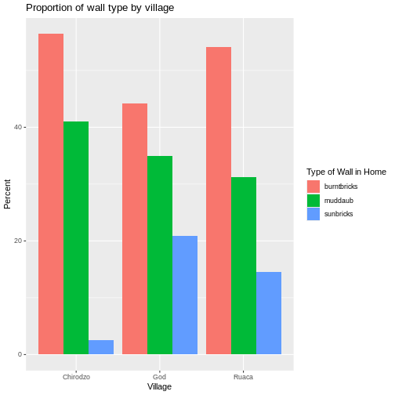
Фасетування
Замість того, щоб створювати один графік зі стовпчиками поруч для кожної громади, ми можемо створити кілька графіків, де кожен показує дані для однієї громади. Це особливо корисно, якщо у нас велика кількість громад у вибірці, адже багато стовпчиків поруч важко читати.
У ggplot2 є спеціальна техніка, яка
називається faceting (фасетування), яка дозволяє розбити один
графік на кілька графіків на основі факторної змінної у наборі даних. Ми
використаємо її, щоб розбити наш стовпчастий графік пропорцій типів
будинків за громадами так, щоб для кожної громади був власна панель у
багатопанельному графіку:
R
percent_wall_type %>%
ggplot(aes(x = respondent_wall_type, y = percent)) +
geom_bar(stat = "identity", position = "dodge") +
labs(title="Proportion of wall type by village",
x="Wall Type",
y="Percent") +
facet_wrap(~ village)

Натисніть кнопку “Zoom” у панелі графіків RStudio, щоб переглянути більшу версію цього графіка.
Зазвичай графіки на білому фоні легше читати при друку. Ми можемо
встановити білий фон за допомогою функції theme_bw(). Крім
того, можна прибрати сітку:
R
percent_wall_type %>%
ggplot(aes(x = respondent_wall_type, y = percent)) +
geom_bar(stat = "identity", position = "dodge") +
labs(title="Proportion of wall type by village",
x="Wall Type",
y="Percent") +
facet_wrap(~ village) +
theme_bw() +
theme(panel.grid = element_blank())

А що як ми хочемо побачити частку респондентів у кожному селі, які володіють певним предметом? Ми можемо порахувати відсоток людей у кожному селі, які мають кожен предмет, а потім створити серію фасетованих стовпчикових діаграм, де кожна діаграма відповідає окремому предмету. Спершу потрібно обчислити відсоток людей у кожному селі, які володіють кожним предметом:
R
percent_items <- interviews_plotting %>%
group_by(village) %>%
summarize(across(bicycle:no_listed_items, ~ sum(.x) / n() * 100)) %>%
pivot_longer(bicycle:no_listed_items, names_to = "items", values_to = "percent")
Щоб обчислити цей датафрейм із відсотками, нам потрібно було
використати функцію across() всередині операції
summarize(). На відміну від попереднього прикладу з однією
змінною типу стіни, де кожна відповідь належала лише до одного з типів,
люди можуть (і часто мають) більше ніж один предмет. Тому у нас є кілька
стовпців даних (по одному на кожен предмет) і обчислення відсотка
потрібно повторити для кожної колонки.
Поєднання summarize() з across() дозволяє
спочатку вказати стовпці, які потрібно підсумувати
(bicycle:no_listed_items), а потім — обчислення. Оскільки
наше обчислення трохи складніше, ніж доступні вбудовані функції, ми
визначаємо нову формулу:
-
~вказує, що ми визначаємо формулу, -
sum(.x)рахує кількість людей, які мають цей предмет, враховуючи значенняTRUE(.x— це скорочення для стовпця, над яким виконується операція), - і
n()повертає розмір поточної групи.
Після операції summarize() ми отримуємо таблицю
відсотків, де кожен предмет у власному стовпці, тому потрібне
застосування pivot_longer(), щоб перетворити таблицю у
зручніший формат для побудови графіка. Використовуючи цей датафрейм, ми
можемо створити багатопанельну стовпчасту діаграму.
R
percent_items %>%
ggplot(aes(x = village, y = percent)) +
geom_bar(stat = "identity", position = "dodge") +
facet_wrap(~ items) +
theme_bw() +
theme(panel.grid = element_blank())
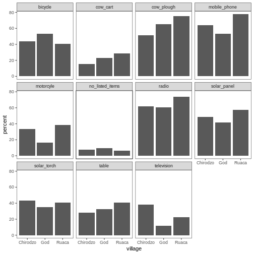
Теми в ggplot2
Окрім theme_bw(), яка змінює фон графіка на білий,
ggplot2 має кілька інших тем, що
дозволяють швидко змінювати вигляд візуалізації. Повний список тем
доступний за посиланням: https://ggplot2.tidyverse.org/reference/ggtheme.html.
theme_minimal() і theme_light() є популярними,
а theme_void() може стати корисною відправною точкою для
створення власної, ручної теми.
Пакет ggthemes
пропонує великий вибір тем (включно з темою Excel 2003). Сайт розширень
ggplot2 пропонує список пакетів, які
розширюють можливості ggplot2, включно з
додатковими темами.
Завдання
Спробуйте використати щонайменше дві різні теми. Побудуйте попередній графік з кожною з цих тем. Яка вам подобається більше?
Налаштування
Подивіться на ggplot2
шпаргалку та подумайте, як можна покращити графік.
Тепер нумо змінимо назви осей на більш інформативні замість ‘village’ та ‘percent’ і додамо заголовок до графіка:
R
percent_items %>%
ggplot(aes(x = village, y = percent)) +
geom_bar(stat = "identity", position = "dodge") +
facet_wrap(~ items) +
labs(title = "Percent of respondents in each village who owned each item",
x = "Village",
y = "Percent of Respondents") +
theme_bw()
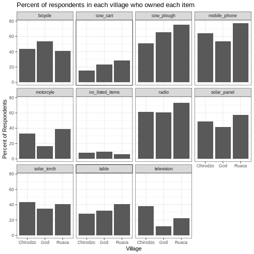
Назви осей стали більш інформативними, але їхню читабельність можна покращити, збільшивши розмір шрифту:
R
percent_items %>%
ggplot(aes(x = village, y = percent)) +
geom_bar(stat = "identity", position = "dodge") +
facet_wrap(~ items) +
labs(title = "Percent of respondents in each village who owned each item",
x = "Village",
y = "Percent of Respondents") +
theme_bw() +
theme(text = element_text(size = 16))
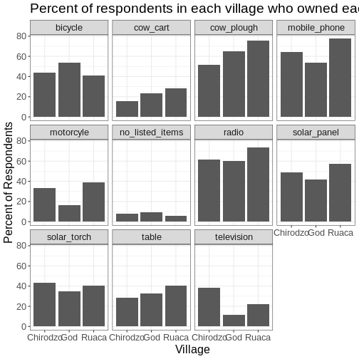
Зверніть увагу, що також можна змінювати шрифти на графіках. Якщо ви
користуєтеся Windows, можливо, доведеться встановити пакет
extrafont та дотримуватися інструкцій
у README цього пакета.
Після наших змін можна помітити, що значення на осі x все ще не зовсім зручні для читання. Змінімо орієнтацію підписів і відрегулюємо їх вертикально та горизонтально, щоб вони не перекривалися. Можна використати кут 90 градусів або підібрати відповідний кут для діагонального розташування підписів. З більшим шрифтом заголовок теж може виходити за межі графіка. Ми можемо додати “\n” у рядок заголовка, щоб вставити новий рядок:
R
percent_items %>%
ggplot(aes(x = village, y = percent)) +
geom_bar(stat = "identity", position = "dodge") +
facet_wrap(~ items) +
labs(title = "Percent of respondents in each village \n who owned each item",
x = "Village",
y = "Percent of Respondents") +
theme_bw() +
theme(axis.text.x = element_text(colour = "grey20", size = 12, angle = 45,
hjust = 0.5, vjust = 0.5),
axis.text.y = element_text(colour = "grey20", size = 12),
text = element_text(size = 16))
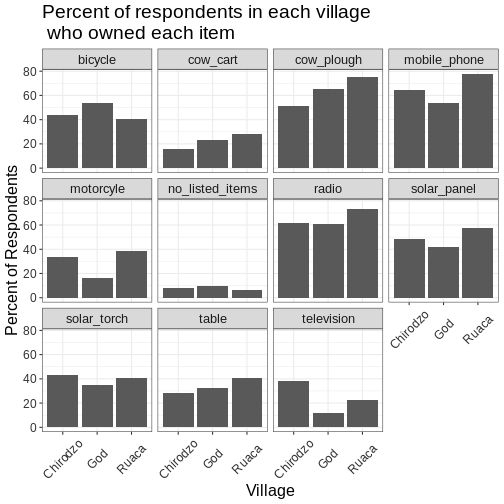
Якщо вам більше подобаються створені зміни у порівнянні з темою за
замовчуванням, їх можна зберегти як об’єкт, щоб легко застосовувати до
інших графіків, які ви створюватимете. Також можна додати
plot.title = element_text(hjust = 0.5), щоб вирівняти
заголовок по центру:
R
grey_theme <- theme(axis.text.x = element_text(colour = "grey20", size = 12,
angle = 45, hjust = 0.5,
vjust = 0.5),
axis.text.y = element_text(colour = "grey20", size = 12),
text = element_text(size = 16),
plot.title = element_text(hjust = 0.5))
percent_items %>%
ggplot(aes(x = village, y = percent)) +
geom_bar(stat = "identity", position = "dodge") +
facet_wrap(~ items) +
labs(title = "Percent of respondents in each village \n who owned each item",
x = "Village",
y = "Percent of Respondents") +
grey_theme
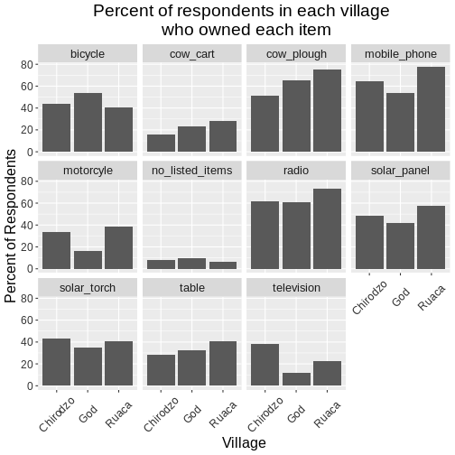
Завдання
Маючи всю цю інформацію, виділіть ще п’ять хвилин, щоб покращити один
із графіків, створених у цьому завданні або створити власний гарний
графік. Використайте RStudio шпаргалку
ggplot2 для натхнення. Ось кілька
ідей:
- Спробуйте зробити стовпці білими з чорним контуром.
- Спробуйте використати іншу кольорову палітру (див. http://www.cookbook-r.com/Graphs/Colors_(ggplot2)/).
Після створення графіка його можна зберегти у файл у потрібному форматі. Вкладка Export у вікні Plot в RStudio зберігає графіки у низькій роздільній здатності, що не підійде для більшості журналів і погано масштабується для постерів.
Замість цього використовуйте функцію ggsave(), яка
дозволяє легко змінювати розмір і роздільну здатність графіка,
налаштовуючи відповідні аргументи (width,
height і dpi).
Переконайтеся, що у вашій робочій директорії є тека
fig_output/.
R
my_plot <- percent_items %>%
ggplot(aes(x = village, y = percent)) +
geom_bar(stat = "identity", position = "dodge") +
facet_wrap(~ items) +
labs(title = "Percent of respondents in each village \n who owned each item",
x = "Village",
y = "Percent of Respondents") +
theme_bw() +
theme(axis.text.x = element_text(color = "grey20", size = 12, angle = 45,
hjust = 0.5, vjust = 0.5),
axis.text.y = element_text(color = "grey20", size = 12),
text = element_text(size = 16),
plot.title = element_text(hjust = 0.5))
ggsave("fig_output/name_of_file.png", my_plot, width = 15, height = 10)
Примітка: параметри width і hight також
визначають розмір шрифту на збереженому графіку.
-
ggplot2є гнучким та корисним інструментом для створення графіків у R. - Набір даних і систему координат можна визначити за допомогою функції
ggplot. - Додаткові шари, включно з geoms, додаються за допомогою оператора
+. - Boxplot (коробковий графік) корисний для візуалізації розподілу числової змінної.
- Barplot (стовпчастий графік) зручний для візуалізації категоріальних даних.
- Faceting (фасетування) дозволяє створювати кілька графіків на основі категоріальної змінної.